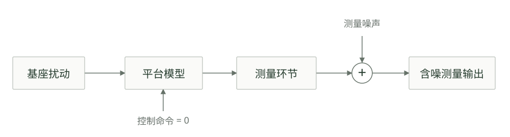
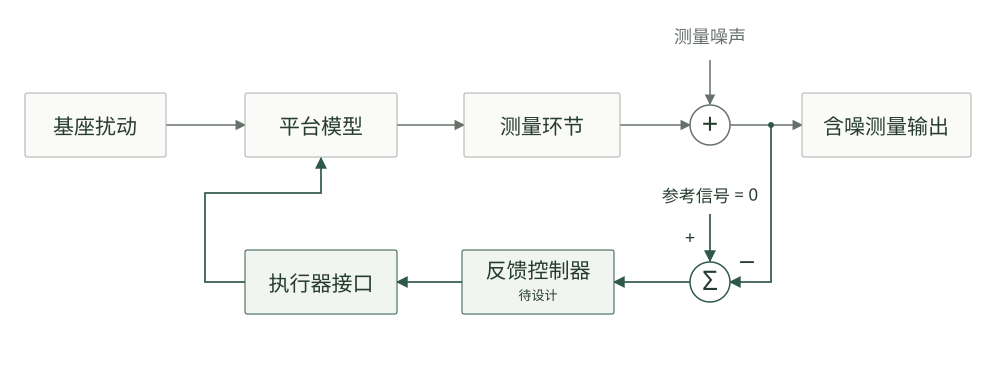

项目背景
精密工程中的微小振动，是一个需要兼顾动力学、测量与反馈控制的问题。
应用背景与隔振需求
在精密测量、光学实验和高精度加工等场景中，地面的微小振动会通过支撑结构传递到仪器或工作平台，影响测量结果和设备性能。因此，如何减小外界振动对平台运动的影响，是精密工程中的一个重要控制问题。
在没有主动控制时，平台依靠悬挂结构实现被动隔振，但在固有频率附近可能出现明显的共振响应。主动控制利用传感器测得的运动信息，实时计算执行器命令，为平台提供附加阻尼并抑制振动。本作业主要关注 0.1–10 Hz 频段内的低频振动控制。
六自由度主动隔振平台
本作业的研究对象是一套六自由度主动隔振平台。平台通过三个悬挂片与基座连接，其运动包括沿三个坐标轴的平动，以及绕三个坐标轴的转动。系统配置三个水平音圈电机和三个竖直音圈电机，用于主动施加控制作用；通过安装在平台上的三只三轴惯性速度传感器获取运动信息，共形成九路原始测量信号。
该系统的控制难点在于多个运动方向之间存在耦合：一个执行器的作用可能同时引起多个方向的响应，而某一路传感器信号也可能包含不同运动分量。控制器设计需要考虑完整系统的相互作用，在保证闭环稳定的前提下，权衡振动抑制效果与控制输入大小。
第一部分 · 专题文献调研
以小组为单位开展专题文献调研。每组 5 人，其中 2 人负责文献调研；每名调研成员承担两个主题，全组必须覆盖全部四个主题，并合作形成一份调研报告。
本部分围绕主动隔振平台，从平台构型与布局、动力学与控制性能、低频测量与传感器融合、先进控制算法四个方面梳理研究现状、代表性方法与工程应用。调研应体现归纳、比较和分析，不能只罗列文献。
一、分工与组织
人员与覆盖要求
每组 5 人，其中 2 人为调研成员。每名调研成员负责两个主题，两人合计覆盖 A、B、C、D 全部四个主题。
推荐分配：A + C 与 B + D
调研成员甲：A 平台构型与布局 + C 低频测量与传感器融合。
调研成员乙：B 动力学与控制性能 + D 先进控制算法。
其他组合
小组也可以采用其他两两组合（如 A + B 与 C + D），但须在报告附录《分工与贡献说明》中写明组合方式和理由。无论采用哪种组合，每个主题都必须有一名主要负责人，每名调研成员恰好主责两个主题。
二、各主题内容指引
各主题可围绕研究现状、代表性方案、适用条件与局限来组织。下面列出供参考的调研内容，可以据此展开，也可以按检索到的文献调整。
平台构型与布局
调研典型主动隔振平台的结构形式，包括自由度配置、支撑或悬挂方式、执行器与传感器的选型及空间布局。比较不同方案的特点，分析结构与布局对平台运动、测量和控制实现的影响。
供参考的调研内容
- 近年精密设备、引力波探测和空间微振动隔离中，主动隔振平台常见哪些构型（如 Stewart/hexapod、正交布置的多轴平台、多级主被动平台、悬挂式平台）？自由度配置、支撑方式和典型频段有什么差别？
- 软支撑、硬支撑，以及准零刚度、负刚度等主被动复合支撑，如何影响低频传递率、主动控制带宽，以及对执行器行程和推力的要求？
- 音圈电机、压电等执行器在行程、带宽、推力、迟滞和发热上如何取舍？低频隔振场景近年为什么仍常用音圈电机？
- 执行器和传感器的数量与空间布局，如何影响输入输出坐标变换、通道解耦和测量冗余？
- 同位布置与非同位布置在结构上如何区分？近年文献中，这种差别对闭环稳定性和可达带宽有什么影响？
动力学与控制性能
调研平台的动力学特性，重点关注固有频率、阻尼、模态及多自由度耦合，分析这些特性对闭环稳定性、控制带宽和振动抑制效果的影响。结合具体模型，讨论右半平面零点等非最小相位特征的产生条件及其带来的控制性能限制。
供参考的调研内容
- 多自由度隔振平台的固有频率、阻尼和模态耦合，近年常用解析模型、有限元还是试验辨识来描述？平动与转动为什么会耦合？
- 被动隔振的传递率在共振附近和高频段有什么特征？主动控制能改变其中哪些部分，又受到哪些约束？
- 同位控制为什么仍被用来获得零极点交替和较好的鲁棒稳定性？非同位布置在什么条件下会出现右半平面零点？
- 右半平面零点会带来哪些性能限制？结合 Bode 灵敏度积分，说明它对可达带宽和扰动抑制的影响。近年的鲁棒控制或模型预测控制是否绕得开这些限制？
- 倾斜-水平耦合的物理来源是什么？它为什么仍会在低频段限制水平方向的惯性测量？
- 多输入多输出系统为什么要用奇异值、方向性和传输零点描述性能？只做逐通道 SISO 分析可能遗漏什么？用辨识模型或数字孪生模型讨论这些限制时，通常核对哪些量？
低频测量与传感器融合
调研惯性传感器在低频测量中的性能局限及其对主动隔振效果的影响。进一步研究惯性测量与相对位移等互补测量信号的融合方案，比较其融合原理、频带分工、参数选择及适用条件。
供参考的调研内容
- 速度型惯性传感器（检波器、地震计）在 0.1–10 Hz 的传递特性和自噪声，近年文献如何给出？低频噪声上升怎样限制隔振效果？
- 水平惯性传感器为什么会在低频测到“表观”运动？倾斜-水平耦合随频率怎样变化？转动测量、倾斜减除和无倾斜测量各自适用什么频段、付出什么代价？
- 惯性测量与相对位移测量如何分频段使用？互补滤波的融合频率和阶数如何影响噪声注入、低频漂移和稳定性？
- 可以对照若干近年仍常见的融合或校正做法（高阶互补滤波、传感器校正、双传感器反馈，以及用传感噪声模型或辨识模型来选融合频率），说明原理、参数和适用条件。
- 天钩阻尼依赖什么测量量？若只有惯性速度，近年的实现通常能做到什么程度？
- 闭环里的测量噪声怎样经控制器作用到平台上？文献一般如何把噪声注入和控制作用分开讨论？
先进控制算法
调研适用于主动隔振平台的先进控制方法，介绍其基本原理、控制结构及模型与测量信息需求。比较不同方法的性能特点、鲁棒性和实现难度。
供参考的调研内容
- 主动隔振的控制目标如何写成扰动抑制、传递率整形、测量噪声影响和控制输入约束？灵敏度函数与补灵敏度函数在鲁棒设计里分别限制什么？
- 可以对照近年常见的几类做法：解耦加经典 SISO、H∞ 或 μ 综合等鲁棒控制、处理约束的模型预测控制、自适应前馈（如滤波-x 最小均方、自校正多输入多输出前馈），以及数据驱动或学习型方法。说明所需的模型精度和测量、鲁棒性、计算量，以及证据来自实验还是仿真。
- 反馈和前馈在隔振中如何分工？自适应前馈通常还需要哪些测量？
- 右半平面零点、带宽限制和通道耦合，怎样制约上述鲁棒控制、模型预测控制和前馈方法？
- 数据驱动或学习型方法在隔振文献中的对照基线是什么？有没有与在线辨识或数字孪生模型一起使用，证据是否包括实验？
三、文献建议
下面几条供参考，可按检索到的文献灵活掌握。
- 建议参考文献都用英文。
- 新文献优先近两年，其次近五年。
- 经典文献也可以一并收入。
- 建议做比较表，把不同方案放在一起对照。
- 图可以随意，有助于说明时再配即可。
四、引用格式与学术规范
- 参考文献格式。 统一采用 GB/T 7714—2025《信息与文献 参考文献著录规则》，正文用顺序编码制标注，文末按引用顺序列出。有 DOI 的文献须给出 DOI。
- 图表来源。 图表须编号、配图题或表题。引用、改绘他人图表时，须在图题或表注中注明来源文献；自绘图表注明“作者自绘”或“根据文献[x]改绘”。
- 学术诚信。 不得抄袭、拼贴或简单翻译他人文字，引用原文须加引号并标注出处。不得引用未读过的文献，不得编造或篡改文献信息和数据。
- AI 工具使用声明。 可以使用 AI 工具辅助检索、翻译和语言润色，但须在附录中如实说明使用的工具、用途和范围。AI 生成的文献条目、数据和结论必须逐条核对原始文献；因使用 AI 而引用了不存在或与原文不符的文献，按学术不端处理。
五、提交
建议两个部分分开交。第一部分交一篇调研报告；第二部分交一份作业报告，以及完整的工程代码和数据。提交时间和方式以课程通知为准。
第二部分 · 被控对象与模型接口
Model-1019：连续时间线性系统，20 个状态、12 个输入、6 个输出。
本部分采用 Model-1019 作为控制器设计与闭环仿真的被控对象。模型描述平台在控制命令和基座运动共同作用下的小幅运动响应，并包含测量环节的动态影响。模型已进行固定的输入输出坐标变换，具体数值以教学包中的 data/model1019.mat 为准。
u 由 6 路控制命令与 6 路基座运动组成
矩阵 A 为 20 × 20，B 为 20 × 12，C 为 6 × 20，D 为 6 × 12。B 的前六列对应控制输入，后六列对应基座扰动。使用时完整保留教学包给出的矩阵与接口约定。
状态组成
| 状态类别 | 数量 | 含义 |
|---|---|---|
| 位移与转角状态 | 6 | 描述平台三个方向的平动和绕三个坐标轴的转动 |
| 辅助速度状态 | 6 | 描述机械运动与基座扰动共同作用下的内部动态 |
| 倾角记忆状态 | 2 | 描述平台倾斜对水平惯性测量的动态影响 |
| 测量滤波状态 | 6 | 描述六路测量信号的等效低通动态 |
辅助速度状态不能直接等同于平台真实速度。模型内部状态、传感器测量量和机械运动评价量，应按照教学包使用手册中的接口定义使用。
十二路输入
输入按“六路控制命令在前、六路基座运动在后”的顺序排列。前六路由控制器计算，后六路由扰动信号给定。
| 通道 | 名称 | 含义 | 单位 |
|---|---|---|---|
| 1 | u_x | X 方向虚拟控制命令 | 命令量 |
| 2 | u_y | Y 方向虚拟控制命令 | 命令量 |
| 3 | u_z | Z 方向虚拟控制命令 | 命令量 |
| 4 | u_LRx | 绕 X 轴的虚拟控制命令 | 命令量 |
| 5 | u_LRy | 绕 Y 轴的虚拟控制命令 | 命令量 |
| 6 | u_LRz | 绕 Z 轴的虚拟控制命令 | 命令量 |
| 7 | base_x | 基座 X 方向位移 | m |
| 8 | base_y | 基座 Y 方向位移 | m |
| 9 | base_z | 基座 Z 方向位移 | m |
| 10 | base_theta_x | 基座绕 X 轴转角 | rad |
| 11 | base_theta_y | 基座绕 Y 轴转角 | rad |
| 12 | base_theta_z | 基座绕 Z 轴转角 | rad |
教学包已经完成转动通道的单位换算。基座输入直接使用 m 和 rad，测量输出直接使用 m/s 和 rad/s，无需再次乘除参考长度。控制命令仍按模型定义的命令量使用。
六路输出
| 通道 | 名称 | 含义 | 单位 |
|---|---|---|---|
| 1 | vx_apparent | X 方向表观速度测量 | m/s |
| 2 | vy_apparent | Y 方向表观速度测量 | m/s |
| 3 | vz | Z 方向速度测量 | m/s |
| 4 | omega_x | 绕 X 轴的角速度测量 | rad/s |
| 5 | omega_y | 绕 Y 轴的角速度测量 | rad/s |
| 6 | omega_z | 绕 Z 轴的角速度测量 | rad/s |
六路输出均包含测量滤波动态，其中水平 X、Y 两路还包含倾角影响。输入输出坐标变换便于按六个运动方向组织控制，但模型仍保留动态耦合。系统分析和闭环验证应以完整模型为依据。
仿真系统说明
分别观察平台的机械运动与含噪测量，在一致的条件下比较控制效果。
无控制系统与基准响应
无控制系统对应主动反馈关闭、执行器不施加附加控制作用的工况。平台依靠自身支撑结构提供刚度和阻尼，其运动主要由外界扰动及初始状态决定。该工况用于建立闭环控制效果的比较基准。

地面运动通过基座和悬挂结构传递至平台，引起平动与转动响应。平台运动经过传感测量环节形成输出信号，测量过程中同时受到传感器噪声的影响。在主动反馈关闭时，附加测量噪声会影响观测结果，但不会通过控制器和执行器进一步作用于平台。
平台机械运动用于描述模型中的振动状态，传感器测量输出用于描述控制器能够获得的信息。通过分析无控制工况下的时域响应和频谱，可以了解主要振动频段、共振响应及不同运动方向之间的联系。
闭环控制系统
闭环系统在平台与测量模型的基础上加入反馈控制器。传感器测得的平台运动信息传入控制器，控制器根据测量偏差计算命令，再由执行器对平台施加作用，形成反馈回路。图示参考信号取零，具体采样与执行接口以所采用的仿真实现为准。

平台不同运动方向之间存在动态耦合，一个通道的控制作用可能影响其他通道。控制器设计需要考虑完整多输入多输出系统的相互作用，闭环稳定性与性能也应在完整系统上验证。
闭环中的测量噪声不仅影响传感器读数，还可能经控制器产生执行器命令，进而影响平台运动。控制器设计需要在扰动抑制、测量噪声影响和控制输入大小之间作出合理取舍。反馈测量的幅值下降，也需要结合模型中的机械运动加以解释。
比较无控制与闭环工况时，保持外界扰动、测量噪声、初始条件和分析设置一致，考察目标频段内的振动变化、其他频段的响应变化，以及获得相应抑振效果所需的控制输入。
控制器设计任务
依次完成模型分析、FZ 至 Z 单通道设计和完整 MIMO 系统设计。
模型分析
基于六路控制输入和六路测量输出，分析系统的可控性与可观性。结合极点、零点及通道耦合特性，讨论模型对控制性能的影响与限制。
可控性分析使用模型中对应控制命令的输入矩阵，即
B的前六列；后六列为外部基座扰动。报告应说明所用分析方法、主要结果，以及这些结果对后续控制器设计的启示。单通道控制器设计：FZ 至 Z
针对 FZ 至 Z 通道设计反馈控制器，说明设计依据和参数选择过程，绘制灵敏度函数的频率响应，并结合闭环仿真评价稳定性、扰动抑制效果和控制输入代价。
在教学包接口中，该通道对应第 3 路控制命令
u_z与第 3 路输出vz。FZ 为本作业的通道标记，输入按教学包的虚拟命令量使用。多输入多输出控制器设计
针对完整 MIMO 系统设计反馈控制器，说明控制结构及其处理多通道耦合的思路，绘制灵敏度矩阵的奇异值曲线，并结合闭环仿真评价多通道抑振效果、耦合影响和控制输入代价。
报告应将完整系统的稳定性分析与仿真结果联系起来，对不同运动方向的响应变化和设计取舍给出解释。
在控制设计报告中呈现模型分析、设计过程、灵敏度曲线、闭环对比结果与结论，并提供可运行代码及复现所需的参数说明。
控制性能评价
绘制六路含噪测量输出的 ASD，对比 Control off 与 Control on。
对 X、Y、Z、RX、RY、RZ 六个通道分别作图，每张图叠加无控制与闭环控制曲线。两种工况应使用相同的扰动与噪声实现、记录时长、初始条件和谱分析参数，以保证比较条件一致。
统一的谱估计规范
对含噪速度测量信号使用 Welch 方法估计功率谱密度（PSD），再换算为位移或转角等效幅值谱密度（ASD）。含噪信号应先在时域相加，再计算 PSD。
| 参数 | 统一设置 |
|---|---|
| 采样频率 | fs = 10000 Hz |
| 分段长度 | nperseg = 1000000 |
| 窗函数 | 周期 Hann 窗 |
| 重叠 | 50%，noverlap = 500000 |
| 去趋势 | detrend = constant |
| 谱归一化与平均 | scaling = density，average = mean |
六图格式
- 频率范围统一为 0.01–100 Hz，零频不进入对数图。
- 同一通道的两条曲线共用坐标轴，纵轴上下预留约 8% 的显示余量。
- 平移通道单位为 m/√Hz，转动通道单位为 rad/√Hz。
- 图例统一标注 Control off 与 Control on，图题标明通道。
这些曲线是由测量速度换算得到的位移或转角等效 ASD，保留测量链和噪声的影响。结果分析应说明控制后哪些频段得到抑制、哪些频段出现变化，并结合稳定性、耦合与控制输入解释原因。
材料与使用方法
模型、扰动、噪声和使用示例已打包提供。
Model-1019 教学包
v1.0 · ZIP · 51 KB
Model-1019 状态空间模型
MAT · A、B、C、D 及接口说明 · 6 KB
教学包包含连续时间状态空间模型、地面运动源、传感噪声谱及生成器，以及 Python 和 MATLAB 两套使用示例。示例为无控制系统，六路控制命令固定为零，不包含已设计的控制器。
| 内容 | 位置 | 用途 |
|---|---|---|
| 使用手册 | 在线阅读 下载 Markdown | 单独提供，不再放入教学包；包含接口定义、运行方法和频谱分析规范 |
| 模型与信号资源 | data/ | 模型矩阵、地面源和噪声谱 |
| Python 示例 | python/ | 无控制仿真与 ASD 绘制 |
| MATLAB 示例 | matlab/ | 独立的无控制仿真实现 |
开始使用
解压后先阅读在线使用手册，确认模型接口、单位约定及运行环境，再从解压目录运行示例。
python python/run_example.py使用 Python 3.10 或更高版本，并准备 NumPy、SciPy、Matplotlib。具体版本要求见在线使用手册与依赖清单。
addpath(fullfile(pwd,'matlab'));
run_example;在 MATLAB 中切换到解压目录后执行。无控制主示例采用基础函数，具体环境要求见使用手册。
示例运行后生成频谱、ASD 图及运行设置记录。包内未附预生成的仿真结果；控制器设计和闭环结果需由各组自行完成。正式比较时保持同一语言实现中的输入、噪声和分析设置一致。
提交时说明软件环境、控制器参数、仿真条件、谱分析设置和运行入口，使报告中的图与结论能够由所提交的代码复现。